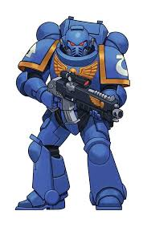

Ismertető
Részletes leírásokat tehetsz ide: Space Marine kapitányok, ork klánok, elda hadseregek, tau koalíciók, Chaos erők és egyéb frakciók.
| Frakció | Leírás | Kép |
|---|---|---|
| Space Marines | Az emberiség elit harcosai, akik az Emperor szolgálatában állnak, erős páncélzatban és fejlett fegyverekkel felszerelve. |  |
| Orkok | Brutális és agresszív lények, akik a harc és pusztítás mesterei, gyakran használják a nyers erőt és a tömeges támadásokat. |  |
| Eldák | Ősi és misztikus faj, akik fejlett technológiával és pszichikus képességekkel rendelkeznek, gyakran a gyors és precíz harcmodort alkalmazzák. |  |
| Tauk | Fiatal és ambiciózus faj, akik a technológiai fejlődésre és a koalíciókra helyezik a hangsúlyt, gyakran használják a távolsági fegyvereket és drónokat. |  |
| Chaos Marines | Az emberiség árulói, akik a káosz isteneinek szolgálatában állnak, gyakran démoni erőkkel és korrupt technológiával rendelkeznek. |  |